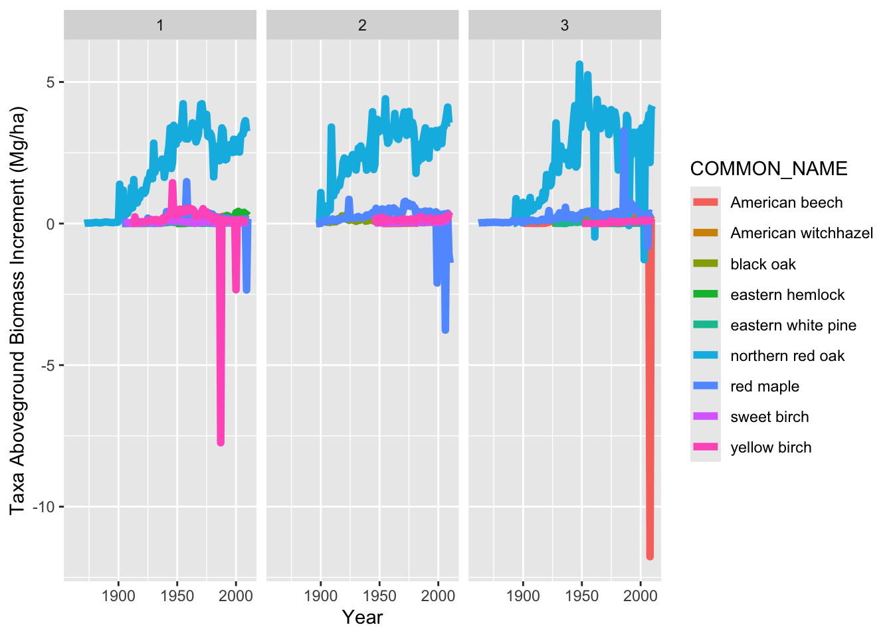
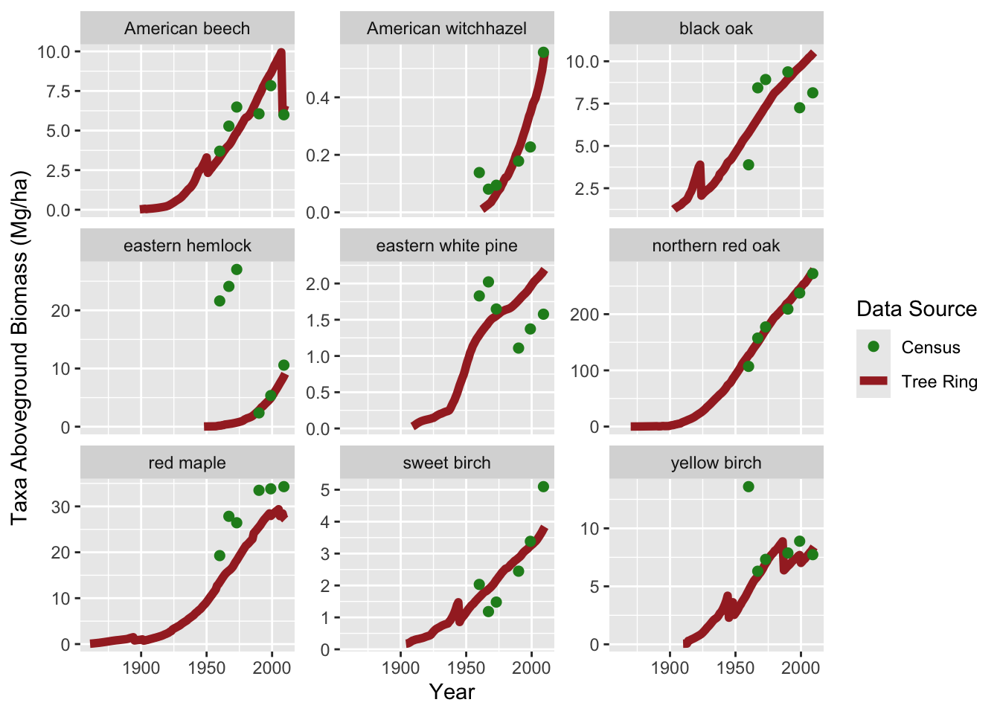

Biomass estimation from tree ring and forest census data
How do we get estimates of aboveground biomass and forest carbon from tree diameters and tree ring data?
Allometric equations define the relationship between commonly measured aspects of a tree (usually tree species, diameter, and/or height) and the weight of the tree (aboveground biomass, AGB). These equations are developed through a small set of destructive samples– this involves sampling tree size, height, and species, measuring tree mass, and developing a quantitative relationship between the commonly measured metric and tree mass.
In this module we will:
Apply species-specific allometric equations to the Harvard Forest Census dataset to estimate AGB at the time of census
Back-calculate tree diameter from the tree ring data at Harvard Forest
Apply allometric equations to the back-calculated tree diameters at Harvard Forest to estimate a timeseries of AGB.
1. Estimating Forest biomass for trees at the time of census
We will use the allometric equations in the allodb R package
This package is available on github, and we highlight some additional resources here:
devtools::install_github("ropensci/allodb",upgrade ="never")library(allodb)library(tidyverse)library(dplR)library(gt)library(reshape2)HARV <-readRDS("data/tree_data_HARVARD_STAN_v3.1_102020.RDS")taxon.conversion <-readRDS("data/taxon_conversion.RDS")Tree.ring <- HARV$Xobs %>%left_join(., HARV$Tr)# get the calendar yearsyear.df <-data.frame(year =max(Tree.ring$year):1, cal.year =2012:(2013-max(Tree.ring$year)))Tree.ring <- Tree.ring %>%left_join(., year.df)year.df <-data.frame(year =max(Tree.ring$year):1, cal.year =2012:(2013-max(Tree.ring$year)))# set up the lat-long information:HARV.ll <-data.frame(site =c("LF1", "LF2", "LF3"), lat =c(42.53065, 42.53128, 42.53008), lon =c(-72.18346, -72.18271, -72.18246))Census <- HARV$Dobs %>%left_join(., year.df) %>%rename("taxon"="species")%>%left_join(., taxon.conversion) %>%# combine with taxon-infomationleft_join(., HARV.ll) # combine with lat-long informationCensus <- Census %>%mutate(INV.YEAR =ifelse(cal.year >=1985& cal.year <=1991, 1990, cal.year))
Here, we will focus on species from Harvard Forest, so lets see which species we have in our census data. This information is stored in the taxon column in the Census object:
Code
# lets visualize the number of trees sampled at Harvard Forest each census year:Census %>%group_by(taxon, `Scientific Name`, COMMON_NAME, INV.YEAR) %>%summarise(n.trees =n()) %>%group_by(taxon, `Scientific Name`, COMMON_NAME) %>%spread(INV.YEAR, n.trees, fill =0) %>%ungroup() %>%gt()
taxon
Scientific Name
COMMON_NAME
1960
1967
1973
1990
1999
2009
ACRU
Acer rubrum
red maple
41
211
188
141
111
90
BEAL
Betula alleghaniensis
yellow birch
8
17
18
16
24
29
BELE
Betula lenta
sweet birch
2
5
5
7
10
16
FAGR
Fagus grandifolia
American beech
2
4
4
12
16
26
HAVI
Hamamelis virginiana
American witchhazel
2
5
5
9
10
25
PIST
Pinus strobus
eastern white pine
4
29
24
6
8
8
QURU
Quercus rubra
northern red oak
27
129
114
79
73
67
QUVE
Quercus velutina
black oak
1
7
6
4
3
3
TSCA
Tsuga canadensis
eastern hemlock
3
4
7
8
13
25
Code
# we can also plot this up visually:ggplot(data = Census)+geom_bar(aes(x =as.character(INV.YEAR), fill =`Scientific Name`), position ="dodge")+theme_bw()+ylab("Number of Trees Observed")+xlab("Inventory Year")+facet_wrap(~site, ncol =1)
Based on this table and figure, which species do you think will have the largest aboveground biomass?
Lets use the get_biomass function from allodb to get estimates of biomass
This function requires the following arguments and provides and output of Aboveground biomass in kilograms (kg):
dbh: diameter at breast height (cm), numeric
genus: genus of the tree, character
species: the species name of the tree, character, can be NULL if only genus is known
coords: a vector (longitude, latitude) of the plot location, or a matrix with 2 columns if trees have individual locations
Code
require(allodb)# lets get the biomass for the first tree in the Census data (a 36.83 cm Northern Red Oak (Quercus rubra):Census.1<- Census[1,] # first treeCensus.1$AGB.1<-get_biomass(dbh = Census.1$dbh ,genus = Census.1$GENUS,species = Census.1$SPECIES,coords =c(Census.1$lon, Census.1$lat) )Census.1$AGB
[1] 979.5547
Now lets apply this function to the whole dataset
Code
ll <-matrix(c(Census$lon, Census$lat), nrow =length(Census$lon), ncol =2, byrow =FALSE, dimnames =NULL)# here we split up the census by sites Census.LF1 <- Census %>%filter(site %in%"LF1")LF1.ll <- HARV.ll %>%filter(site %in%"LF1")Census.LF2 <- Census %>%filter(site %in%"LF2")LF2.ll <- HARV.ll %>%filter(site %in%"LF2")Census.LF3 <- Census %>%filter(site %in%"LF3")LF3.ll <- HARV.ll %>%filter(site %in%"LF3")# get the biomass for each site:Census.LF1$AGB_kg <-get_biomass(dbh = Census.LF1$dbh ,genus = Census.LF1$GENUS,species = Census.LF1$SPECIES,coords =c(LF1.ll$lon, LF1.ll$lat))Census.LF2$AGB_kg <-get_biomass(dbh = Census.LF2$dbh ,genus = Census.LF2$GENUS,species = Census.LF2$SPECIES,coords =c(LF2.ll$lon, LF2.ll$lat))Census.LF3$AGB_kg <-get_biomass(dbh = Census.LF3$dbh ,genus = Census.LF3$GENUS,species = Census.LF3$SPECIES,coords =c(LF3.ll$lon, LF3.ll$lat))plot_radius =20Census.AGB <-rbind(Census.LF1, Census.LF2, Census.LF3) %>%mutate(tph_corr = (1/(pi*plot_radius^2)) * (1/0.0001) * (1/1000)) #%>% # get tree per hectare correction factor to scale tree biomass up#mutate(AGB_Mg_ha = AGB_kg*) # convert the tree level AGB to MG/ha)ggplot(data = Census.AGB)+geom_point(aes(x = INV.YEAR, y = AGB_kg, group = ID, color =`Scientific Name`))+geom_line(aes(x = INV.YEAR, y = AGB_kg, group = ID, color =`Scientific Name`))+facet_wrap(~site)+theme_bw()+ylab("Tree Aboveground Biomass (kg)")+xlab("Year")
Lets get the total species trajectories of biomass over the census periods:
Which species are increasing the most over time? Is this what you expected based on the number of trees tallied? Here, we have added lines to visualize the trajectory of taxon AGB over time, but we don’t have estimates of variability in annual AGB increment over time.
Code
# ggplot(data = Census.AGB)+# geom_point(aes(x = INV.YEAR, y =AGB_Mg_ha, group = ID, color = `Scientific Name`))+# geom_line(aes(x = INV.YEAR, y = AGB_Mg_ha, group = ID, color = `Scientific Name`))+# facet_wrap(~site)+theme_bw()+ylab("Tree Aboveground Biomass (Mg/ha)")+xlab("Year")Census.AGB.sums <- Census.AGB %>%group_by(taxon, `Scientific Name`, site, INV.YEAR) %>%summarise(AGB_Mg_ha_taxon =sum(AGB_kg*tph_corr, na.rm =TRUE))ggplot(data = Census.AGB.sums)+geom_point(aes(x = INV.YEAR, y = AGB_Mg_ha_taxon, color =`Scientific Name`))+geom_line(aes(x = INV.YEAR, y = AGB_Mg_ha_taxon, color =`Scientific Name`))+facet_wrap(~site)+theme_bw()+ylab("Taxon Aboveground Biomass (Mg/ha)")+xlab("Year")
What affects the trajectory of AGB over time?
Forest demographic processes affecting AGB:
Recruitment of new small trees into the plot
Mortality of trees (or conversely, survival)
Growth of existing trees in the plot
Census data provide an estimate of these processes over the remeasurement period.
Recruitment makes up a small amount of AGB at these plots:
site ID taxon variable value recruit.code Recruitment
1 LF1 LF1001 TSCA 1960 NA 0 Existing Tree
2 LF1 LF1001 TSCA 1967 NA 0 Existing Tree
3 LF1 LF1001 TSCA 1973 NA 0 Existing Tree
4 LF1 LF1001 TSCA 1990 19.36831 1 New Recruit
5 LF1 LF1001 TSCA 1999 45.02890 0 Existing Tree
6 LF1 LF1001 TSCA 2009 99.23069 0 Existing Tree
There are some mortality events that remove AGB
Tree and taxon average annual growth and average annual aboveground biomass increment (AGBI) appear to vary across remeasurement periods:
Code
# GrowthAverage.Growth.census <- mortality.code.census %>%group_by(site, ID) %>%arrange(cal.year) %>%mutate(REMPER = cal.year -lag(cal.year),prevDBH =lag(dbh), prevAGB =lag(AGB_kg)) %>%# if the tree died in the remeasurement period, assume it died halfway through mutate(REMPER.mort.corrected =ifelse(mort.code ==1, REMPER/2, REMPER)) %>%ungroup() %>%mutate(tree.AGBI = (AGB_kg - prevAGB)/REMPER.mort.corrected, tree.growth = (dbh - prevDBH)/REMPER.mort.corrected) ggplot(data = Average.Growth.census) +geom_point(aes(x = INV.YEAR, y = tree.AGBI, color = taxon, group = ID))+geom_line(aes(x = INV.YEAR, y = tree.AGBI, color = taxon, group = ID))+facet_wrap(~site)+ylab("Tree Average Aboveground Biomass Increment (kg/year)")
Code
ggplot(data = Average.Growth.census) +geom_point(aes(x = INV.YEAR, y = tree.growth, color = taxon, group = ID))+geom_line(aes(x = INV.YEAR, y = tree.growth, color = taxon, group = ID))+facet_wrap(~site)+ylab("Tree Average Growth Increment (cm/year)")+xlab("Inventory Year")
Code
site.avgs <- Average.Growth.census %>%group_by(site, taxon, INV.YEAR)%>%summarise(taxon.AGBI.avg =mean(tree.AGBI, na.rm =TRUE), taxon.DI.avg =mean(tree.AGBI, na.rm =TRUE))ggplot(data = site.avgs) +geom_point(aes(x = INV.YEAR, y = taxon.DI.avg, color = taxon))+geom_line(aes(x = INV.YEAR, y = taxon.DI.avg, color = taxon))+facet_wrap(~site)+ylab("Taxon Average Growth Increment (cm/year)")+xlab("Inventory Year")
Code
ggplot(data = site.avgs) +geom_point(aes(x = INV.YEAR, y = taxon.AGBI.avg, color = taxon))+geom_line(aes(x = INV.YEAR, y = taxon.AGBI.avg, color = taxon))+facet_wrap(~site)+ylab("Taxon Average AGBI (kgyear)")+xlab("Inventory Year")
However, some remeasurement periods are quite long, and we miss inter-annual variation that could lead to differences in estimates of annual AGBI. Tree-ring data can help us fill in these gaps in our understanding of how AGB varies over time, since they are a direct measurement of annual growth.
Step 2: Use tree ring data to back-calculate tree diameter at Harvard Forest:
In order to use tree ring data to estimate tree AGB, we first need to convert measurements of annual tree growth into estimates of tree diameter.
There are many different ways to convert tree ring radial increments to an estimate of circumference (i.e. diameter) and to an estimate of area (i.e. basal area). The dplR package from opendendro has some functions to calculate basal area increment–check out bai.in, bai.out, and bakker.
For simplicity here, we will we assume that each tree grows symmetrically and in a circle. So we convert tree ring growth data for each core from radial increment to a diameter increment by multiplying by 2. Because we have a diameter measurement from a recent census, we can back-calculate the diameter by subtracting the following year’s increment. To calculate the Diameter for core () in the year just before the census diameter was taken year (), we subtract the diameter increment growth () from the Census measured Diameter
Back-calculating tree diameter for a single tree Red Maple tree at Harvard Forest:
Read in the rwl files for red maple at Harvard Forest (using read.tucson function in dplR) and link them up to the census dataset.
Code
library(dplR)# read in the rwl files using the helpful dplR functions:all.HF.rwl <-list.files("data/rwl/", pattern =".rwl", full.names = T)read.rwl.reformat <-function(SPCD.rwl){ inc.rwl <-read.tucson(SPCD.rwl)# here, I reformat the data as a dataframe, get a tree id (id), and keep a core.id.# the core.id is a separate core that denotes what direction on the tree the sample was taken from inc.rwl.df <-data.frame(inc.rwl) %>%mutate(cal.year =row.names(inc.rwl)) %>% reshape2::melt(., id.vars ="cal.year") %>%rename("core.id"="variable", "incr"="value") %>%mutate(id =substr(core.id, 1, 6)) %>%filter(!is.na(incr))%>%mutate(cal.year =as.numeric(cal.year))return(inc.rwl.df)}all.HF.increment <-do.call(rbind, lapply(all.HF.rwl, read.rwl.reformat))# get the diameter measurements for the cored trees:Cored.Diam <- HARV$Tr %>%left_join(., year.df) %>%left_join(., all.HF.increment ) %>%filter(!is.na(core.id)) %>%select(-incr)%>%rename("cored.year"="year", "cored.cal.year"="cal.year")inc.diam <- all.HF.increment %>%left_join(., Cored.Diam)# example of back-calculating diameters for all the red maple corescore.all <- inc.diam %>%# filter so we only have increments from the last census diameter measurement or earlier (for now)filter(cal.year <= cored.cal.year) %>%# get the cumulative diameter increment, or how much the tree has grown from the outside in since a given year:# The increments are in mm, so convert to cm by dividing by 10# assume the tree is a perfect circle so multiply by 2 to get the diameter increment#filter(id %in% "LF1035") %>% group_by(core.id) %>%arrange(desc(cal.year)) %>%# calculate the cumulative sum of diameter increments, from the cored diameter to the earliest:mutate(cum.diainc =cumsum((incr/10)*2), dia.inc = (incr/10)*2) %>%# simplify this dataset for use:select(cal.year, cored.cal.year, core.id, incr, id, dbh, cum.diainc, dia.inc, plot) %>%ungroup()%>%# grouping by the core id after arranging by calendar year is important!!group_by(core.id) %>%# if the year is the year the cored tree diameter was measured, use that as the dbhmutate(dbh_cm_bc =ifelse(cal.year == cored.cal.year, dbh, # if the year is before the tree was cored, use lag to subtract the cumulative increment# lag gives use the previous value (gives the cumulative diameter increment from year == 2012 for cal.year == 2011)ifelse(cal.year < cored.cal.year, dbh -lag(cum.diainc), NA)))# to convince yourself that this is working right, check that the estimated increments == the tree diameter increment:# core.all %>% mutate(check.dia.inc = dbh_cm_bc - lead(dbh_cm_bc)) %>% # filter(!round(dia.inc, 3) == round(check.dia.inc, 3) )
Code
east.core <- core.all %>%filter(core.id %in%"LF1005e")ggplot()+geom_line(data = east.core, aes(x = cal.year, y = dbh_cm_bc, color = core.id))+geom_point(data = east.core %>%filter(cal.year == cored.cal.year), aes(x = cal.year, y = dbh))+ylab("Tree diameter (cm)")+xlab("Year")
Multiple cores: Within-tree variation in increment and diameter observations
Using our simple method get a back-calculated tree diameter estimate based on each core. When using tree-ring data to estimate trends in tree size (or Basal Area, Aboveground Biomass, etc), the variation in tree ring widths from different cores in the same tree and year represents observation uncertainty. Here, a single red maple tree (LF1005) has three cores, with variability in tree ring increment and the back-calculated tree size.
We note that the approach in this module has some issues, including the possibility of estimating negative tree diameters near the beginning of the time series, ignoring bark thickness, and assuming perfectly circular tree trunks.
Later in our tutorial, we will demonstrate how developing a “data model” can allow us to estimate uncertainty due to information from different cores and to include this uncertainty in our estimates of tree diameter and aboveground biomass. For this module, we will average the diameter increments for each core before back-calculating the diameters to demonstrate how to estimate biomass over time.
Step 3: visualizing biomass over time (with no uncertainty)
Code
tree.averages <- inc.diam %>%group_by(id, cal.year, dbh, cored.cal.year, taxon, plot) %>%summarise(incr.avg =mean(incr, na.rm =TRUE)) %>%# filter so we only have increments from the last census diameter measurement or earlier (for now)filter(cal.year <= cored.cal.year) %>%# get the cumulative diameter increment, or how much the tree has grown from the outside in since a given year:# The increments are in mm, so convert to cm by dividing by 10# assume the tree is a perfect circle so multiply by 2 to get the diameter incrementgroup_by(id) %>%arrange(desc(cal.year)) %>%# calculate the cumulative sum of diameter increments, from the cored diameter to the earliest:mutate(cum.diainc =cumsum((incr.avg/10)*2), dia.inc = (incr.avg/10)*2) %>%# simplify this dataset for use:select(cal.year, cored.cal.year, incr.avg, id, dbh, cum.diainc, dia.inc, plot, taxon) %>%ungroup()%>%# grouping by the core id after arranging by calendar year is important!!group_by(id) %>%# if the year is the year the cored tree diameter was measured, use that as the dbhmutate(dbh_cm_bc =ifelse(cal.year == cored.cal.year, dbh, # if the year is before the tree was cored, use lag to subtract the cumulative increment# lag gives use the previous value (gives the cumulative diameter increment from year == 2012 for cal.year == 2011)ifelse(cal.year < cored.cal.year, dbh -lag(cum.diainc), NA)))
`summarise()` has grouped output by 'id', 'cal.year', 'dbh', 'cored.cal.year',
'taxon'. You can override using the `.groups` argument.
Code
ggplot()+geom_line(data = tree.averages, aes(x = cal.year, y = dbh_cm_bc, group = id, color = taxon))+geom_point(data = tree.averages %>%filter(cal.year == cored.cal.year), aes(x = cal.year, y = dbh))+ylab("Tree diameter (cm)")+xlab("Year")
Converting forest biomass to carbon using carbon fractions
We convert back-calculated tree diameters to aboveground biomass, again using the allometric equations in the allodb package.
Scaling Tree Ring-based tree-level biomass using the sample design:
For the tree ring sample, a double-nested plot sampling design was deployed at harvard forest, where the smaller diameter trees (<20cm) were sampled in the inner plot and large trees were sampled in the inner plot (>=20cm). This means that each cored tree represents a different sub-sample of the population. We use unit conversions to convert tree biomass units from kg/plot to Mg/ha
Code
# we need to adjust the biomass units from kg/plot to Mg/ha inner_factor = (1/ (pi*13^2)) * (1/0.0001) * (1/1000) outer_factor = (1/ (pi*20^2)) * (1/0.0001) * (1/1000) TR.AGB <- TR.AGB %>%mutate(tph_corr =ifelse(dbh >=20, outer_factor, inner_factor)) #%>% mutate(AGB_Mg_ha= AGB_kg*TPA_factor)saveRDS(TR.AGB, "data/TR_AGB_ests_allodb.rds")
Let’s calculate the total taxon AGB over time & Aboveground biomass increment
`summarise()` has grouped output by 'COMMON_NAME', 'GENUS', 'SPECIES',
'cal.year'. You can override using the `.groups` argument.
Code
ggplot()+geom_line(data = TAXA.AGB, aes(x = cal.year, y = AGB_Mg_ha_taxa, color = COMMON_NAME), size =2)+ylab("Taxa Aboveground Biomass (Mg/ha)")+xlab("Year")+facet_wrap(~plot)
Warning: Using `size` aesthetic for lines was deprecated in ggplot2 3.4.0.
ℹ Please use `linewidth` instead.
Code
ggplot()+geom_line(data = TAXA.AGB, aes(x = cal.year, y = AGBI.taxa, color = COMMON_NAME), size =2)+ylab("Taxa Aboveground Biomass Increment (Mg/ha)")+xlab("Year")+facet_wrap(~plot)
Warning: Removed 9 rows containing missing values or values outside the scale range
(`geom_line()`).

The simplest way of estimating Carbon from tree-level biomass is to assume that the “carbon fraction,” that is the fraction of the tree’s weight that is made up of Carbon, is 50%, so multiplying your biomass value by 0.5 will give you a mass of Carbon per unit area.
Other carbon fractions are available, for example for live trees vs. dead trees, and for different forest types/species, but for simplicity we will use 0.5 here.
Joining with `by = join_by(taxon, `Scientific Name`)`
`summarise()` has grouped output by 'COMMON_NAME'. You can override using the
`.groups` argument.
`summarise()` has grouped output by 'COMMON_NAME'. You can override using the
`.groups` argument.
Code
ggplot()+geom_line(data = TR.totals , aes(x = cal.year, y = AGB_Mg_ha_Site, color ="Tree Ring"), size =2)+geom_point(data = Census.totals, aes(x = INV.YEAR, y = AGB_Mg_ha_Site, color ="Census"), size=2) +ylab("Taxa Aboveground Biomass (Mg/ha)")+xlab("Year")+facet_wrap(~COMMON_NAME, scales ="free_y")+scale_color_manual(values =c("Tree Ring"="brown", "Census"="forestgreen"), name ="Data Source")

Issues and strengths of estimating biomass from tree ring data alone:
Strengths:
Annual estimates of tree growth allow us to estimate interannual variabliity in AGB and AGBI (which we may be interested in correlating to climate, disturbances, etc)
tree ring time-series may cover time periods prior to traditional census or forest inventory data
Issues:
Approach in this module ignore uncertainty in our estimates due to information from different cores
We assume that the census diameter closest to the time of coring is “truth,” but diameter measurements also have measurement uncertainty
Lack of demographic data prior to coring leads contributes to an underestimation of AGB in the past; i.e. the “Fading-record” problem, where we miss AGB from trees that have died and prior to coring (and were not sampled).
Often, we may not have a dendroecological sample with a core from all the trees.
In the next module, we will introduce a modelling approach that leverages the strengths of both forest census and tree ring data to address some of the issues.